企業的建築外觀，也是品牌的一部分
一棟使用多年的廠辦，最先改變的，往往不是企業本身，而是建築外觀。
塗層逐漸老化、牆面髒污、色彩褪去，甚至出現漏水、鏽蝕等問題。當企業設備、品牌與營運早已持續更新，建築卻仍停留在多年前的狀態，企業給人的第一印象，也可能跟著停留在過去。
但廠辦外牆更新，真的只是把建築重新刷漂亮嗎？其實不一定。
從一棟既有廠辦的更新工程來看，外牆拉皮往往同時涉及現況檢測、基面處理、修補、隔熱、細部排水、塗裝與立面規劃。以下就以騰煇參與的小磨坊斗六廠辦更新工程為例，看看一棟既有廠辦，是如何一步一步重新整理外牆。
每個案場，狀況都不同
不同建築的外牆材料、使用年限、外在環境與既有問題都不相同，替可影響評估與工法。
因此，外牆更新沒有一套固定答案，需要先了解現況，才能規劃適合的工程方式。
案例 ｜ 小磨坊斗六廠辦現況評估
在小磨坊斗六廠辦更新工程中，施工前的現況評估顯示，本案為 ALC 版外牆，存在接縫處滲漏水、鋼筋鏽蝕裸露，以及既有防水漆處理效果不佳等問題。
這也說明了一件事：外牆老化不一定只是視覺問題。當企業廠辦長期使用，表面塗層老化、髒污與褪色、接縫處滲漏水、基材局部損壞與鋼筋鏽蝕裸露往往同時發生。因此在規劃更新前，第一步不是急著決定「要刷什麼顏色」，而是先了解建築現在的狀況。
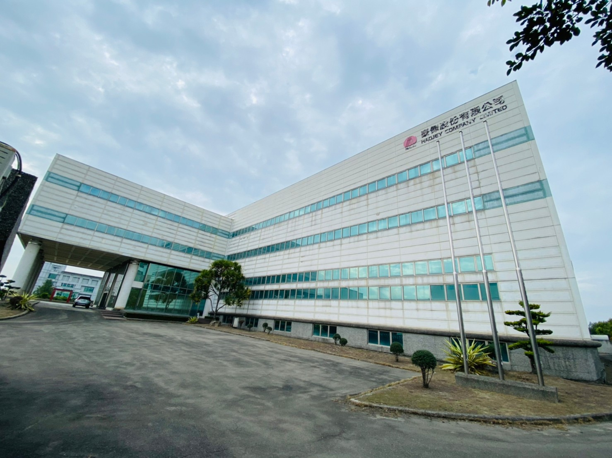
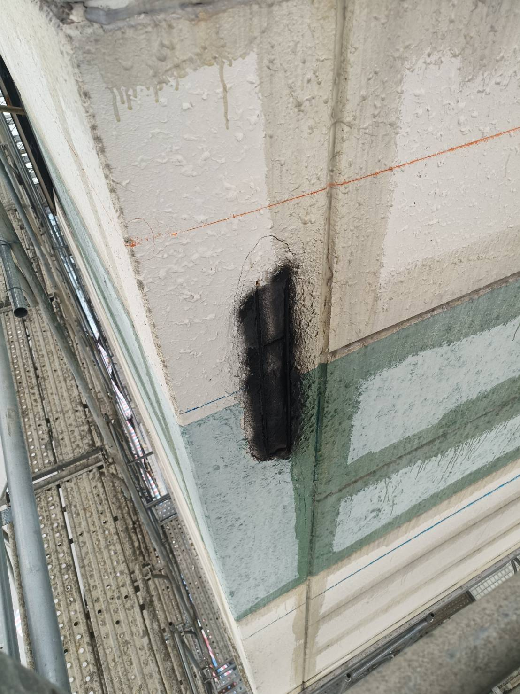
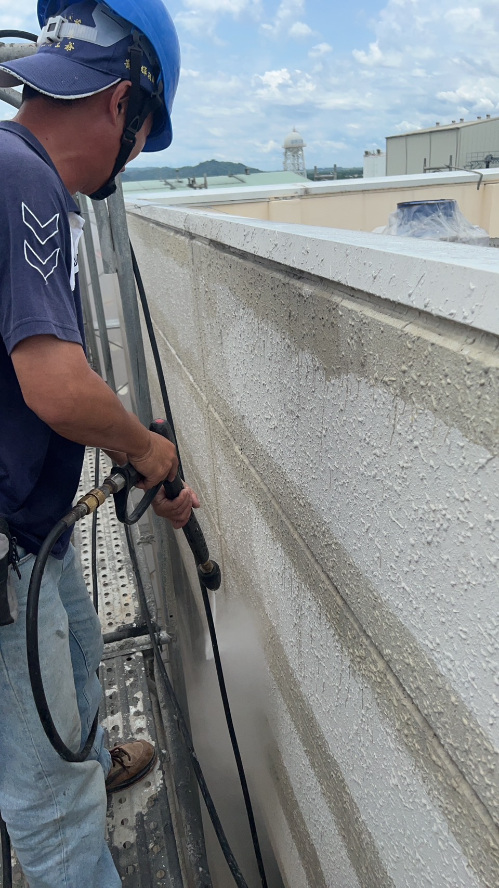
規劃設計 ｜ 從現況決定更新方向
依據現場評估結果，本案規劃採用 PPG 彈性佩能漆 ＋ 節能板工法，並透過 3D 渲染圖確認立面色彩與整體數值樣態，讓業主在施工前看見更新後的樣子。
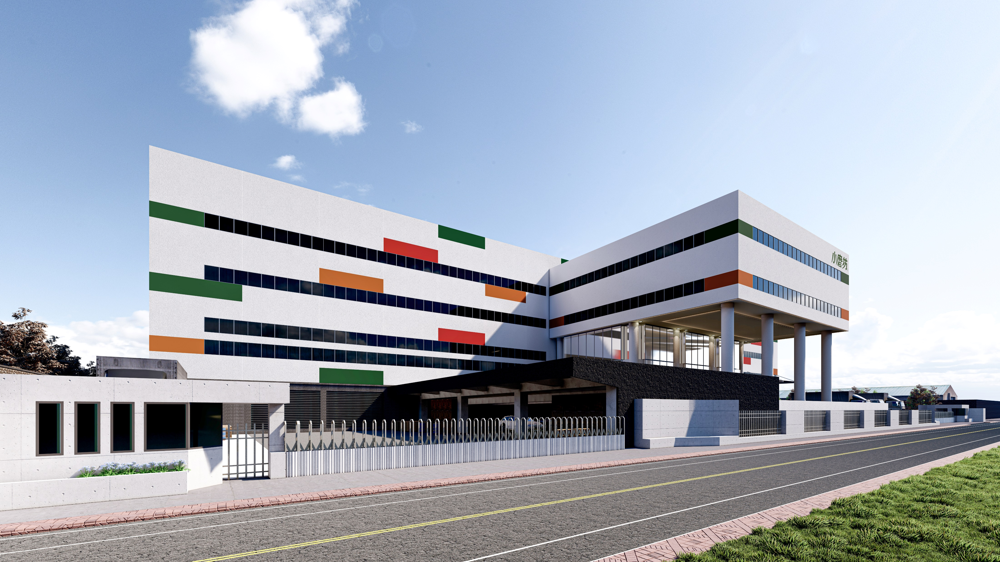

工程施工 ｜ 一步一步，重新整理外牆
如果原有基面存在問題，直接在表面增加新的材料並不能解決問題。在小磨坊斗六廠辦的施工紀錄中，可以看到外牆經過敲除 ➔ 防鏽 ➔ 修補等處理，窗框周邊原有的矽利康也進行割除處理。這些看起來不像「外觀設計」的工作，反而是外牆更新能否順利進行的重要基礎。
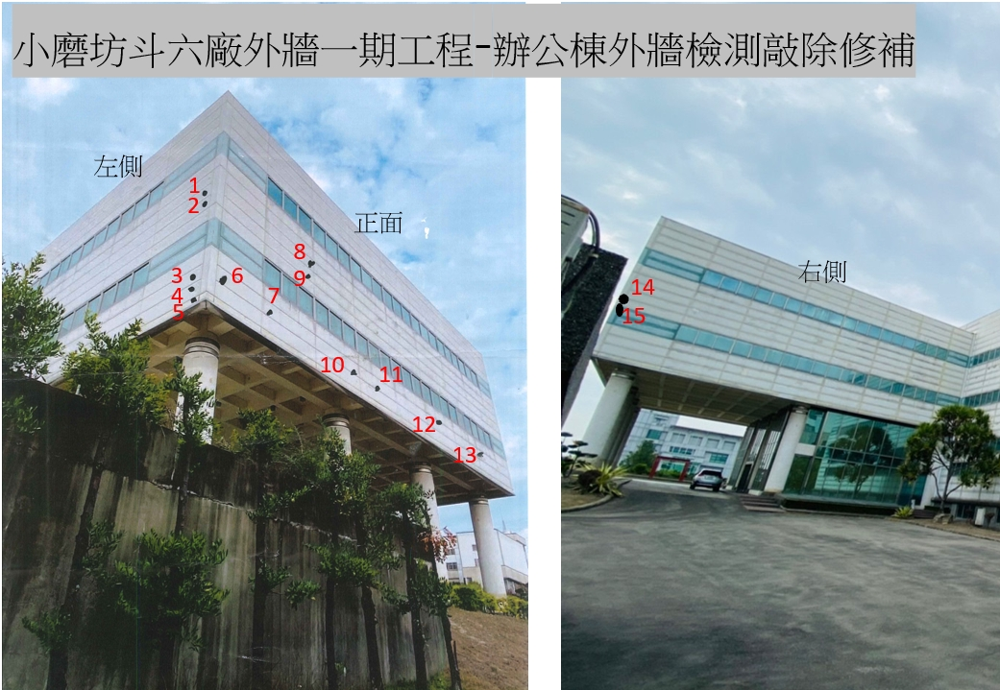
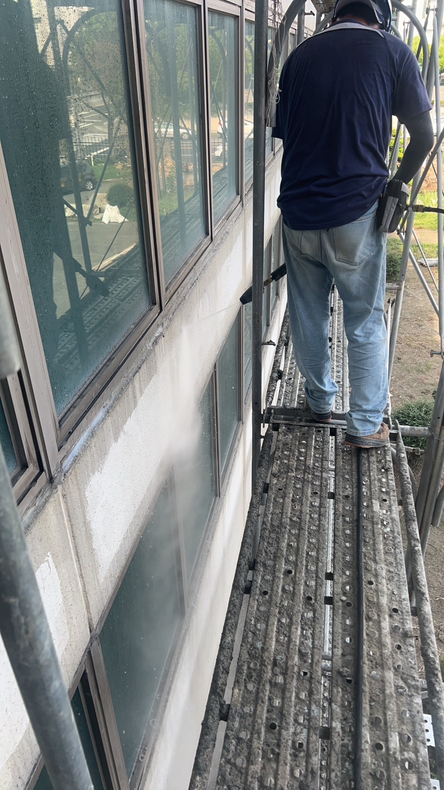
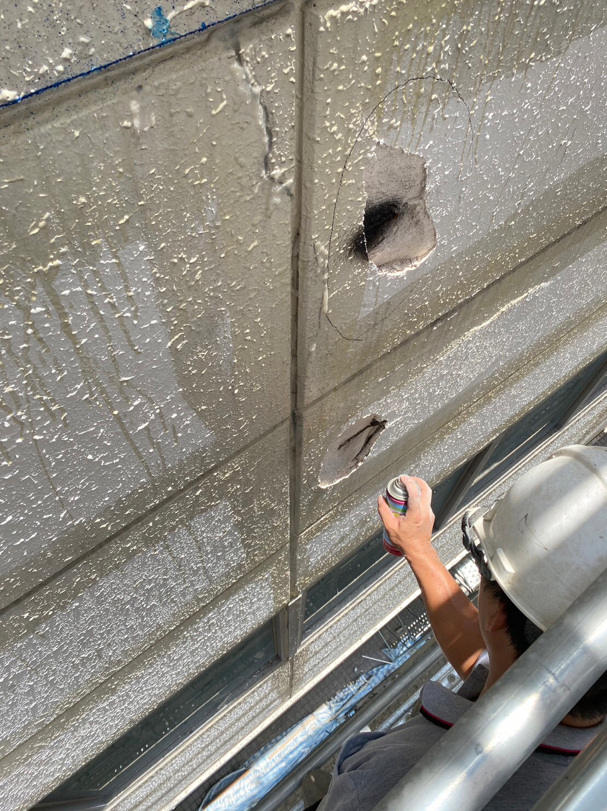
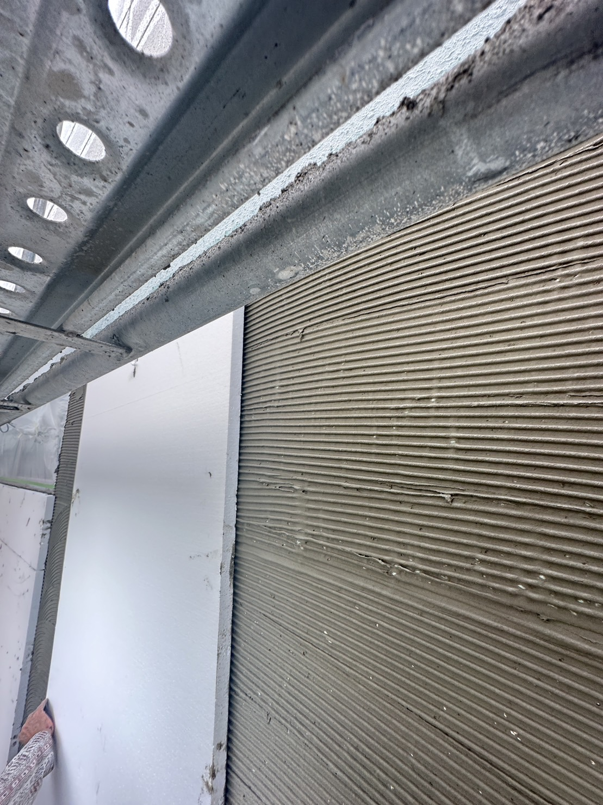
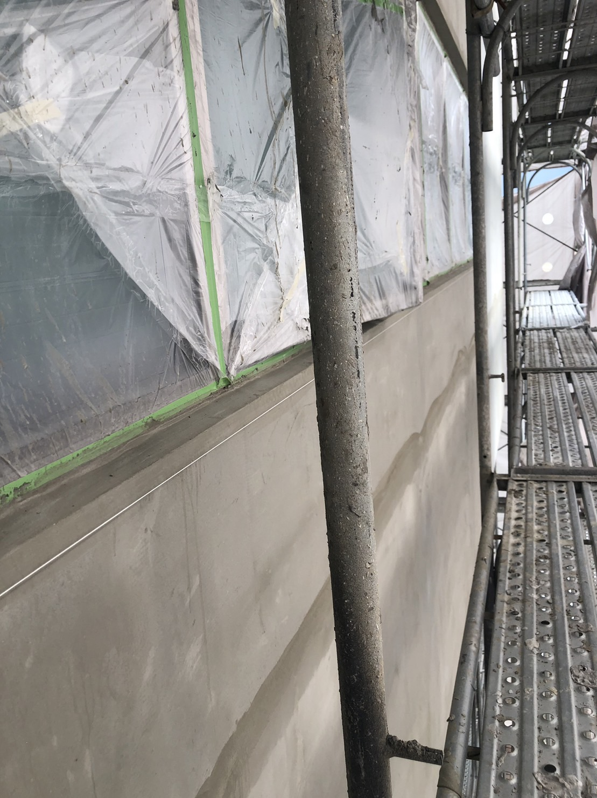
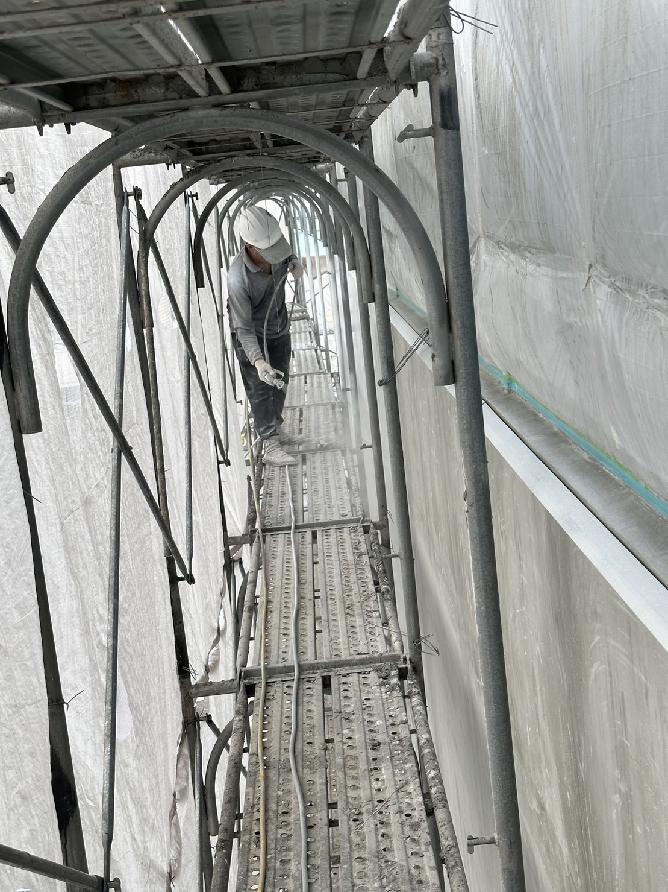
工法說明 ｜ PPG 彈性佩能漆 ＋ 節能板
本案採用 PPG 彈性佩能漆搭配節能板工法，提升建築外牆的隔熱效果與耐候防護，並預防極端氣候下的水氣滲漏。
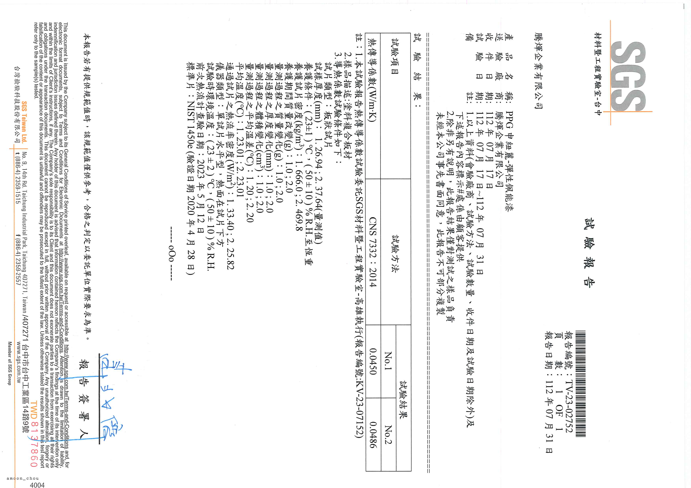
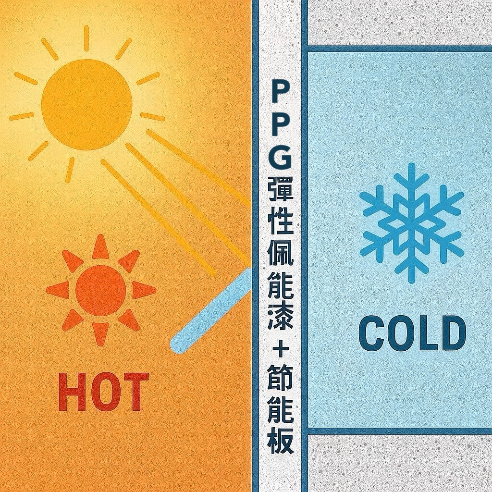
成果 ｜ 同一棟廠辦，更新前後
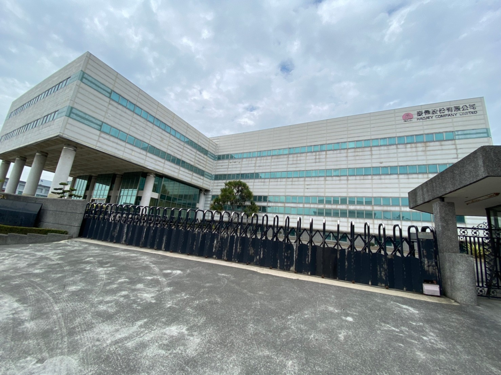
外牆更新，不只是讓建築變新。從既有外牆條件、工程處理，到立面規劃與塗裝，重新思考企業建築的外貌，讓企業形象也能持續向前。
外牆更新工程，找騰煇
從現況評估、規劃設計，到材料與工程施工，騰煇提供完整外牆整合服務，讓舊建築重新展現企業現有的價值。